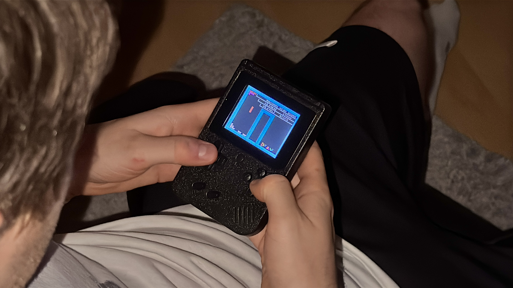

Galerie
Medien &
Eindrücke


Forschungsfrage: Wie beeinflusst 2 Wochen Tetris das kognitive Leistungsprofil? Ein Pre-/Post-Experiment mit neuropsychologischen Tests, einer Trainings- und einer Kontrollgruppe.
Tetris ist mehr als ein Spiel: Es verlangt sekündlich mentale Rotation, räumliche Planung und schnelle Entscheidungen unter Zeitdruck. Wir untersuchten dabei folgende messbare Frage: Verbessert regelmäßiges Tetris-Spielen die kognitiven Fähigkeiten, oder wird man nur in der geübten Aufgabe selbst besser?
Werden Reaktions- und Bearbeitungszeiten nach dem Training kürzer?
Steigt die Trefferquote bei räumlichen Aufgaben?
Wächst die Merkspanne im räumlichen Arbeitsgedächtnis?
„Gehirnjogging" und Brain-Training-Apps versprechen, mit kleinen Spielen die allgemeine Denkleistung zu steigern. Ob solche Effekte wirklich auf andere Aufgaben übertragen (Transfer) oder nur die geübte Aufgabe besser wird, ist offen und gleichzeitig für Lernen, Mediengestaltung und den Alltag hochrelevant. Tetris ist dafür ein ideales, alltagsnahes Beispiel.
Ob Tetris die kognitiven Fähigkeiten wirklich steigert, ist in der Forschung umstritten: Manche Studien fanden Verbesserungen bei räumlichen Aufgaben (De Lisi & Wolford, 2002; Terlecki et al., 2008), andere keinen Tetris-spezifischen Effekt, sondern nur einen allgemeinen Übungseffekt (Okagaki & Frensch, 1994; Sims & Mayer, 2002; Pilegard & Mayer, 2018). Genau diesen Streitpunkt greifen wir mit unseren Wahrnehmungs-Aufgaben auf. Quellen ↓
Die meisten dieser Studien testen nur eine Fähigkeit, oft das Drehen im Kopf. Wir schauen breiter und messen mehrere Bereiche auf einmal. Dazu stellen wir den räumlichen Aufgaben bewusst eine Aufgabe ohne Raumbezug gegenüber (Kopfrechnen). So sehen wir, ob Tetris wirklich gezielt hilft oder ob man einfach durch das viele Üben besser wird. Außerdem zeigen wir unsere Ergebnisse offen und bieten eine Plattform zum selber ausprobieren.
Drei Phasen, zwei Gruppen, so isolieren wir den Effekt des Spielens.
Alle Proband:innen absolvieren den Wahrnehmungs-Test und liefern ihre Baseline.
30 Minuten pro Tag, protokolliert (Uhrzeit, Highscore). Keine anderen Puzzle-Spiele.
Der selbe Wahrnehmungstest mit abgewandelten Aufgaben. Differenz Pre→Post = individueller Effekt.
Gleicher Pre→Post-Abstand, aber ohne tägliches Tetris-spielen, kontrolliert den reinen Übungseffekt.
Wir haben den Wahrnehmungs-Test so zusammengestellt, dass er zwei Bereiche gegenüberstellt: räumliche Aufgaben (sollten profitieren) und eine numerische Kontrolle (sollte stagnieren). Dieser Kontrast macht einen Transfer-Effekt nachweisbar.
Ausgewertet wird die individuelle Pre→Post-Differenz pro Test, gruppiert nach kognitiver Domäne. Die Kontrollgruppe und die nicht-räumliche Kontrollaufgabe dienen als doppelte Absicherung gegen Übungs- und Erwartungseffekte.
Jeder Test zielt auf eine kognitive Domäne, und jede Auswahl hat einen Grund. Jede Domäne hat ihre eigene Farbe, die sich in den Ergebnis-Charts wiederfindet. Das Label sagt, ob wir eine Verbesserung oder eine Stagnation erwarten.
Ausgewertet haben wir die 11 Proband:innen mit vollständigem Pre- und Post-Test (7 Trainingsgruppe, 4 Kontrollgruppe) über sechs Aufgaben. Jede Linie ist eine Person, die gestrichelte Linie der Gruppenmittelwert. Darunter steht, was die Statistik dazu sagt.
Nur zwei der sechs Tests zeigen eine statistisch echte Veränderung von Pre zu Post: Regeln wechseln (p = .034) und Papier falten (p = .007). Das Entscheidende: In keinem einzigen Test hat sich die Trainingsgruppe signifikant stärker verbessert als die Kontrollgruppe (keine Gruppe×Zeit-Wechselwirkung). Beide Gruppen wurden ähnlich besser, bei Papierfalten die Kontrollgruppe sogar stärker. Und die nicht-räumliche Kontrollaufgabe (Kopfrechnen) blieb stabil.
Das spricht klar für einen allgemeinen Übungseffekt (man wird routinierter im Testen) und gegen einen gezielten Tetris-Transfer. Genau diese Trennung war das Ziel unseres Aufbaus.
Methode: Repeated-Measures-ANOVA je Test (Pre→Post und Gruppe×Zeit), ergänzt durch t-Tests der Gruppen. Kleine Stichprobe (N = 11), Ergebnisse sind belastbare Tendenzen.
Veränderung von Pre zu Post je Test (Repeated-Measures-ANOVA). „signifikant" heißt: die Veränderung ist nicht durch Zufall erklärbar (p < .05).
Spiele Tetris wie es unsere Proband:innen zwei Wochen lang gespielt haben, direkt hier. Dein Score landet automatisch im Leaderboard. Mache dann unten den Wahrnehmungstest und deine Ergebnissee werden mit in unsere Studie aufgenommen. In neuem Tab öffnen (Vollbild) ↗
Am Handy: die Tasten unter dem Spielfeld nutzen. Das Spiel pausiert automatisch, wenn du wegscrollst.
Mache hier selbst den Wahrnehmungs-Test!
Zum Abschluss stellen wir unseren Proband:innen ein paar Fragen zum Projekt, zu unserer Vorgehensweise und zu ihrem eigenen Erleben. Unter jeder Frage kannst du dir die aufgenommenen Antworten anhören. Wir ergänzen die Audio-Aufnahmen laufend.

Am Anfang ging es uns um den „Tetris-Effekt": „Inwiefern beeinflusst die repetitive Logik von Tetris die raum-zeitliche Wahrnehmung im Alltag?" Das war aber schwer zu messen. Also haben wir die Frage umgestellt. Jetzt wollten wir einfach wissen: Wird man durch zwei Wochen Tetris in kognitiven Tests besser? Das lässt sich mit Pre- und Post-Tests und einer Kontrollgruppe prüfen.
Geplant hatten wir eine größere Gruppe, bei der alle den Pre- und den Post-Test machen. In der Praxis war das schwieriger. Wir haben weniger Leute zusammenbekommen, und nicht alle haben den Post-Test gemacht. Die Ergebnisse sind deshalb erste Tendenzen und noch nichts Sicheres.
Inhaltlich: Nur zwei von sechs Tests verbesserten sich statistisch echt (Regeln wechseln, Papierfalten), und zwar in beiden Gruppen gleich. Kein Test zeigte einen Vorteil der Trainingsgruppe, und die Kontrollaufgabe Kopfrechnen blieb stabil. Das spricht für einen normalen Übungseffekt und gegen einen echten Tetris-Effekt. Methodisch: Saubere Daten, eine Kontrollaufgabe, eine Kontrollgruppe und ein Pre/Post-Vergleich sind viel mehr Arbeit als gedacht. Aber genau das hat uns gezeigt, wie leicht man einen Übungseffekt mit einem echten Effekt verwechseln kann.
Hält ein Effekt länger an? Profitieren Leute, die noch nie Tetris gespielt haben, mehr? Reicht weniger als 30 Minuten pro Tag? Und wie trennt man echten Transfer sauber vom reinen Übungseffekt?
Mehr Probanden. Leute zufällig auf Training und Kontrolle aufteilen. Eine Kontrollgruppe, die etwas anderes macht statt nichts. Gleiche Tageszeit und gleiche Bedingungen für alle. Und vorher ein paar Probedurchläufe, damit der reine Übungseffekt nicht alles überdeckt.